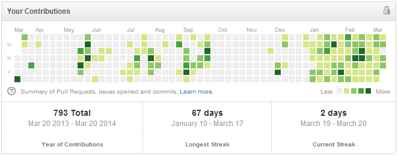
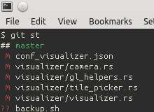

Разработка Мародера - 2014.03.23
Пн. 24 Март 2014
Сходил на Manowar, о да, нужно больше пафоса. Только теперь вообще ничего не слышу :) .
Мучал glfw-rs, cgmath-rs и самого мародера, что бы они собирались с последней версией компилятора. Сложно было :)
Брендан хочет, что бы cgmath-rs был исправлен не таким грубым хаком. Там могут быть косяки с NaN и +/-Inf. Но я туплю как сделать правильно. :(
Мой грандиозный страйк помер :(, черт:

Капельку поковырял текст. Решил, что не буду использовать cmr/hgl-rs, страшно мне. Лучше все-таки чего-то свое сделаю.
Шрифты, шрифты:

Сделал выделение отдельных отрядов в клетке:


blog comments powered by Disqus